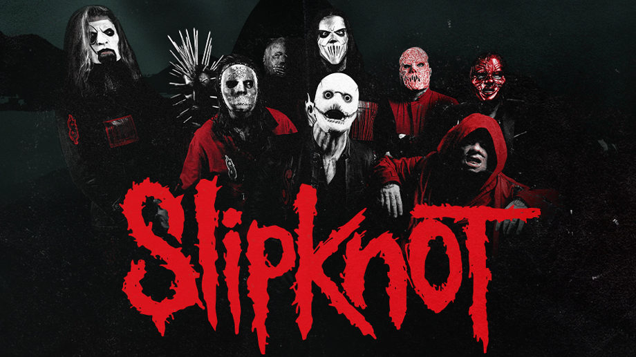
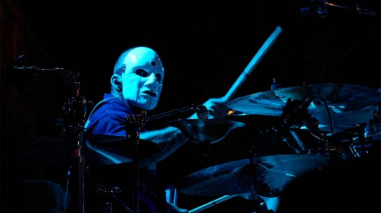
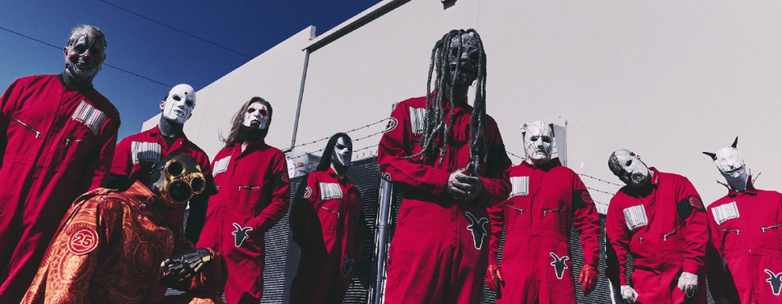

Sobre a Banda
Foto da banda:

Slipknot é uma banda norte-americana de metal formada em Des Moines, Iowa, em 1995. Seu estilo musical é o nu metal, que explodiu no fim dos anos 1990 nos Estados Unidos. A banda é conhecida por seu grande número de integrantes, pelas máscaras usadas por cada um, e pelos shows enérgicos, o que garantiu um número grande de fãs jovens até os dias atuais. Entre 1999 e 2010, a banda foi constituída por Sid Wilson, Chris Fehn, James Root, Craig Jones, Shawn Crahan, Mick Thomson, Corey Taylor, Paul Gray e Joey Jordison, responsáveis pela gravação de quatro álbuns de estúdio nesse período. Após a morte do baixista Paul Gray em 2010 e a saída do baterista Joey Jordison em 2013, Alessandro Venturella (baixo) e Jay Weinberg (bateria) foram escolhidos como substitutos. Em 2019, após um processo de Chris Fehn contra a banda, o percussionista a deixou, sendo substituído por Michael Pfaff. Weinberg deixou a banda em 2023 e, no ano seguinte, Eloy Casagrande assumiu como o novo baterista.
Novidades:
Novo baterista anunciado, 28 de Abril, 2024

Eloy Casagrande
Após deixar o Sepultura às vésperas da turnê de despedida, o baterista brasileiro Eloy Casagrande já tem nova casa. O músico está confirmado como novo membro do Slipknot.
Já inclusive se apresentou com a nova formação e postou uma foto em seu Instagram marcando o novo membro do grupo.
Show anunciado no Brasil, 31 de Janeiro, 2024

Dias 19 e 20 de outubro
Ótima notícia para os fãs do rock. O Knotfest 2024 anunciou as datas da edição para 19 e 20 de outubro e a banda Slipknot como headliner em ambos.
A edição marcará os 25 anos do festival, que, em 2023, não aconteceu. As vendas gerais começam no dia 2 de fevereiro e os shows acontecerão no estádio Allianz Parque.